可变剪切分析神器——rMATs
原文：https://mp.weixin.qq.com/s?__biz=MzAwMzIzOTk5OQ==&mid=2247520911&idx=1&sn=1662a0b8ba6daa27cac8de6e581f3bfd&chksm=9b3cebdfac4b62c9e9d35ec94640fc44c10d6bf8af9c4300bde3b798c2e1f9fa4a433622813f#rd 合集：Bulk RNA-seq
一、写在前面
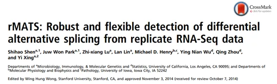
选择性剪接（Alternative splicing，AS）是剪除未成熟mRNA中的内含子、保留外显子后生成成熟mRNA的过程。 在各类疾病发生和发展过程中，异常的选择性剪接起着重要作用。目前RNA-seq已经成为定量分析选择性剪切的有力工具，这篇文章中，作者在先前研究两个样本RNA-seq数据之间的**MATS(multivariate analysis of transcript splicing)的基础上，针对重复（replicate）的样本进行分析，开发了一种新的方法称为 rMATS。**我们在此前的课程转录组教程中已经包含了rMATS的实战(Bulk RNASeq| 转录组实战)，这里让我们一起来看看这个方法的具体内容吧。
二、主要内容
- 1. 非配对重复中的rMATS统计模型。
从RNA-seq数据中进行选择性剪接分析的基本原理即比较不同亚型的reads数占所有亚型的比例 ，以外显子跳跃事件为例，发生时会出现外显子（I）增加和外显子跳跃（S）两种亚型，统计不同亚型reads的比例即为外显子包含水平（ψ）（Fig.1）。ψ的数值受到多种因素的影响，当RNA-seq的reads数越多时，得到的ψ值将越可靠。在相同样本的重复RNA-seq数据中，由于生物技术原因，结果也存在可变性，因此在方法的开发中需要考虑这些因素。
在rMATs中，作者通过分层框架来同时考虑不同重复之间的估计不确定性和重复之间的可变性。外显子的读取包括上层外显子reads，跳跃外显子reads和下层外显子reads。详细计算公式如图所示（Fig.S1）。其中，二项分布模拟了ψ的数值不确定性受总读数n的影响，而重复样本的可变性用混合模型中的 随机效应来模拟 （Fig.2）。
Fig.1：
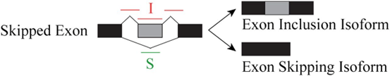
Fig.S1：
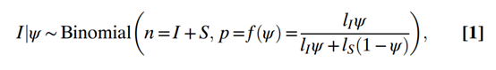
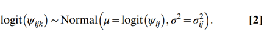
Fig.2
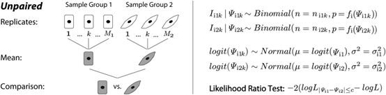
- 1. rMATS的模拟研究。****
之后，作者进行模拟研究来评估rMATS的性能 。选择两个样本（每个样本10个重复的RNA-seq数据），共5000个外显子，其中5%的外显子存在差异剪接。而95%的外显子不存在差异剪接，即两个样本间Δψ≤5%，并计算标准差SD来衡量样本之间的可变性。使用rMATS来分析这些模拟数据 ，结果发现在所有三组模拟中，rMATS对重复数据的分析优于对合并数据的分析，特别是当样本可变性增加时（Fig.3）。
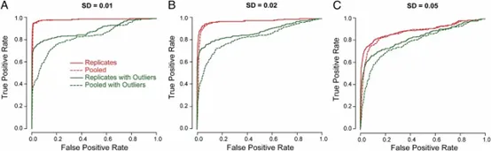
- 2. 前列腺癌的rMATs分析。
为了证实rMATs的实用性，作者分析了两个前列腺癌细胞系 （各n=3）的RNA-seq数据，其中PC3E细胞表现出上皮细胞特性，GS689细胞具有侵袭特性而表现为间充质表型。选择 ARHGAP17 基因进行分析并经过RT-qPCR进行验证（Fig.4），结果显示RT-qPCR的结果与前列腺癌细胞系的RNA-Seq数据分析有94%的一致率。
Fig.4
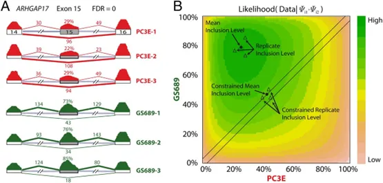
3. 样本大小和测序深度影响检测方法的精确度，****
RNA-seq进行选择性剪接分析时常见的问题便是对于测序深度的选择 ，预算固定时，需要在测序深度和重复样本数之间做选择，通过增加重复的数量能够更好地估计重复之间的可变性，但这样做会降低测序深度并增加单个重复的估计不确定性。因此作者设计了一个实验来检测样本大小和测序深度对于分析精确度的影响，结果表明较低的重复数量便有较高的真阳性率，如在SD = 0.01和0.02时，只需要3个重复 就可以分别达到92% 和90% 的真阳性率（Fig.5A）。同时，当增加测序深度后，作者发现相比于200M，1.6GB的测序深度能够得到更大的真阳性率（Fig.5B）。总的来说，当样本之间变异系数较大时，需要较多的重复才能够达到较高的真阳性率，而样本变异系数较低时，3个重复便能够达到较高的真阳性率；同时，在不考虑预算的情况下，测序深度 的增加能够提供较高的检测精度，但需要较多的样本数量来减少组间变异性。
Fig.5：
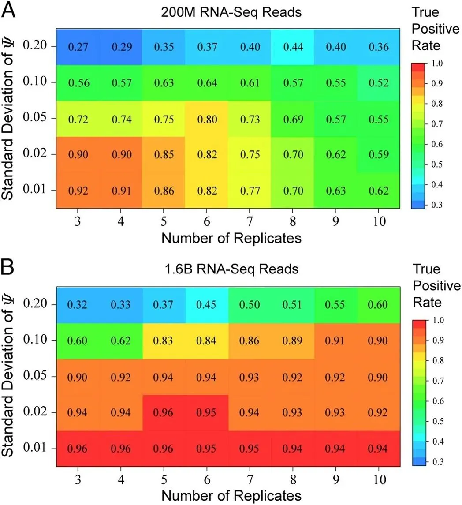
- 4. 配对重复中的rMATS统计。
转录组测序通常选择配对设计研究 ，配对研究的选择能够减少个体的特异性变异，提供统计精确度。rMATs能够通过协方差结构对于配对重复进行建模，结果显示一些外显子在两个配对样本之间具有很强的相关性，而另一些外显子在不同个体上的差异小于配对样本，因此作者引入相关系数 ρi参与计算，使用双变量正态分布来模拟样本组内重复之间的变化以及成对重复之间的相关性（Fig.6）。为了进一步验证rMATs分析配对模型的实用性，作者对于肾癌细胞的RNA-seq进行差异性剪接分析，发现使用配对信息导致统计的显著性增加（Fig.7A）,同时Δψ的SD值也会变小（Fig.7B）。以上结果表明rMATS统计模型可以揭示配对模型中更微妙但一致的剪接变化。
Fig.6：
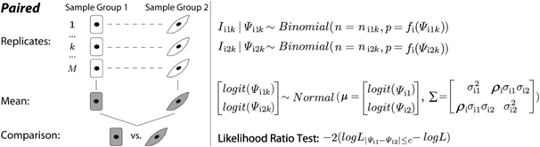
Fig.7
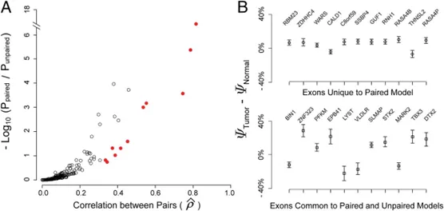
5.rMATS和其他分析方法的比较。****
最后作者将rMATS(未配对模型)的性能与Cufflinks(2.2.1)和DiffSplice(0.1.1)进行比较 ，后者使用Jensen-Shannon散度(JSD)度量来测试两个样本组之间剪接水平/异型比例的差异。结果显示无论是单个样本，还是重复样本的分析，ROC曲线均显示出rMATs的假阳性率较低（Fig.8）。
Fig.8：
** **
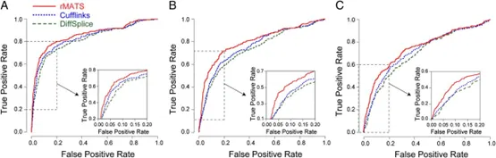
三、总结讨论
综上所述，作者的数据为RNA-Seq的选择性剪接分析提供了指导原则，证明了生物学重复对于设计研究的重要性，同时合并RNA-seq或合并来自多个重复样品的RNA-Seq数据不是解决变异性的有效方法，并且异常值的产生会导致结果的假阳性率变高，因此重复数据的使用对于差异性剪接分析是必不可少的。rMATS的使用教程、测试数据可见：Bulk RNASeq| 转录组实战。 总的来说，rMATs是对于重复数据进行差异选择性剪接的有力工具。

如何联系我们

 公众号后台消息回复不便，这里给大家留一下领取资料及免费服务器(足够支持你完成硕博生涯的生信环境)的微信号 ，方便各位随时交流、提建议（别问在么，添加时直接说来意）。此外呼声一直很高的交流群 也建好了，欢迎大家入群讨论：
公众号后台消息回复不便，这里给大家留一下领取资料及免费服务器(足够支持你完成硕博生涯的生信环境)的微信号 ，方便各位随时交流、提建议（别问在么，添加时直接说来意）。此外呼声一直很高的交流群 也建好了，欢迎大家入群讨论：
大家可以阅读完这几篇之后添加给生信入门初学者的小贴士 如何搜索公众号过往发布内容

 您点的每个赞和在看，我都认真当成了喜欢
您点的每个赞和在看，我都认真当成了喜欢